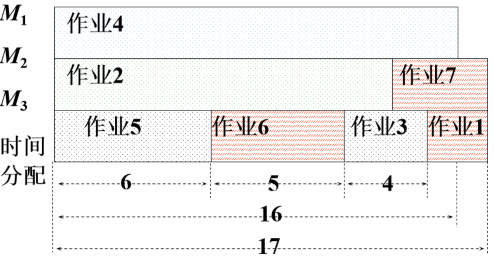

多机调度问题和多处最优服务次序问题
贪心算法(又名贪婪法)，是寻找最优解问题的常用方法，这种方法模式一般将求解过程分成若干个步骤，但每个步骤都应用贪心原则，选取当前状态下最好/最优的选择（局部最有利的选择），并以此希望最后堆叠出的结果也是最好/最优的解。{看着这个名字，贪心，贪婪这两字的内在含义最为关键。这就好像一个贪婪的人，他事事都想要眼前看到最好的那个，看不到长远的东西，也不为最终的结果和将来着想，贪图眼前局部的利益最大化，有点走一步看一步的感觉。}
但是要注意的是，贪心算法不一定能得到全局的最优解，关键是贪心策略的选择。
多机调度问题
问题描述
要求给出一种作业调度方案，使所给的 \(n\) 个作业（假定作业数量 \(n\) 不超过20）在尽可能短的时间内由m台机器加工处理完成。约定，每个作业均可在任何一台机器上加工处理，但未完工前不允许中断处理。作业不能拆分成更小的子作业。
输入格式
第一行包含两个整数 \(m\) 和 \(n\) ，空格分开。 \(m\) 表示机器的数量，\(n\) 表示作业的数量。
第二行包含 \(n\) 个整数，表示每个作业的完成时间。
输出格式
先输出：
将机器 \(M_i\) 从 \(time1\) 到 \(time2\) 的时间段分配给作业 \(N_j\)
…
最后输出：处理完成所有作业需要的最短时间为 \(time\) 。
每个结果占一行。
示例
示例1
输入(input)： 3 5
2 14 6 16 3
输出(output)：
将机器1从0到16的时间段分配给作业4
将机器2从0到14的时间段分配给作业2
将机器3从0到6的时间段分配给作业3
将机器3从6到9的时间段分配给作业5
将机器3从9到11的时间段分配给作业1
处理完成所有作业需要的最短时间为16
示例2
输入(input)：
7 3
6 8 18
输出(output)： 将机器1从0到18的时间段分配给作业3
将机器2从0到8的时间段分配给作业2
将机器3从0到6的时间段分配给作业1
处理完成所有作业需要的最短时间为18
问题分析
如果 \(n\leq m\) ：那么每台机器分配一个作业即可。
如果 \(n>m\) ： 采取贪心策略。贪心策略是优先处理加工时间长作业，即把处理时间最长的作业分配给最先空闲的机器，这样可以保证处理时间长的作业优先处理，从而在整体上获得尽可能短的处理时间。
比如下面这个示例： 输入(input)：
3 7
2 14 4 16 6 5 3
输出(output)：
将机器1从0到16的时间段分配给作业4
将机器2从0到14的时间段分配给作业2
将机器3从0到6的时间段分配给作业5
将机器3从6到11的时间段分配给作业6
将机器3从11到15的时间段分配给作业3
将机器2从14到17的时间段分配给作业7
将机器3从15到17的时间段分配给作业1
处理完成所有作业需要的最短时间为17
用图像表示示例中多台机器处理的流程如下：

代码实现
|
多处最优服务次序问题
问题描述
设有 \(n\) 个顾客同时等待一项服务。顾客 \(i\) 需要的服务时间为 \(t_i\)，\(1\leq i\leq n\), 。共有 \(s\) 处可以提供此项服务。应如何安排 \(n\) 个顾客的服务次序才能使平均等待时间达到最小？平均等待时间是 \(n\) 个顾客等待服务时间的总和除以 \(n\)。
\(j\) 处第 \(k\) 个顾客的等待时间 = 前面 \(k-1\) 个顾客总共服务时间 + 第 \(k\) 个顾客的服务时间。
比如某处第一个顾客的等待时间 = 该顾客自己所需要的服务时间。
输入格式
第一行包含两个整数 \(n\) 和 \(s\) ，空格分开。 \(n\) 表示顾客的数量，\(s\) 表示服务处的数量。
第二行包含 \(n\) 个整数，表示每个顾客需要的服务时间。
输出格式
一行：最小平均等待时间（小数点后保留3位）。
示例
输入(input)：
10 2
56 12 1 99 1000 234 33 55 99 812
输出(output)：
336.000
问题分析
和多机调度问题类似，这道题目的贪心策略是优先服务需要服务时间短的人，这样可以保证每个人的平均等待时间最小。
代码实现
|